Proxmark3使用
proxmark3使用
这个东西需要安装驱动，但是他的驱动又没有签名，所以得把 win10 的强制验证签名的这一选项关掉，参考： windows10如何禁用驱动签名验证-百度经验 设备管理器的端口这里找USB串行设备，右键更新驱动，从本地安装驱动，安装好后设备管理器中应该能显示出他的名字来 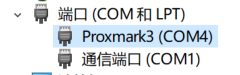 然后打开软件就可以了，会自动识别串口号连接 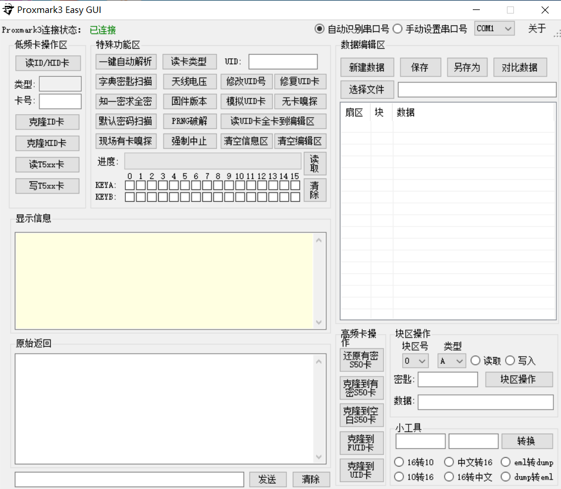 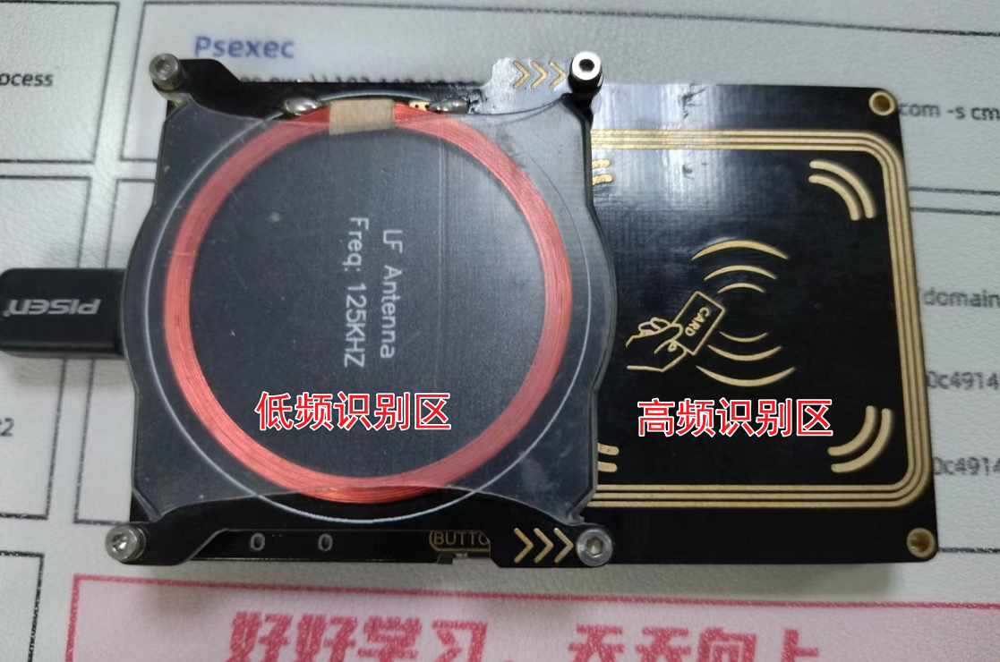
低频卡操作
拿一张ID卡放在低频识别区，点击低频卡操作区的读ID/HID卡可以看到识别为一张 EM410X 的卡，实际这张卡是 T5xx 的，克隆为 ID 卡就会识别为 ID 卡，克隆为 HID 卡就会被识别为 HID 卡
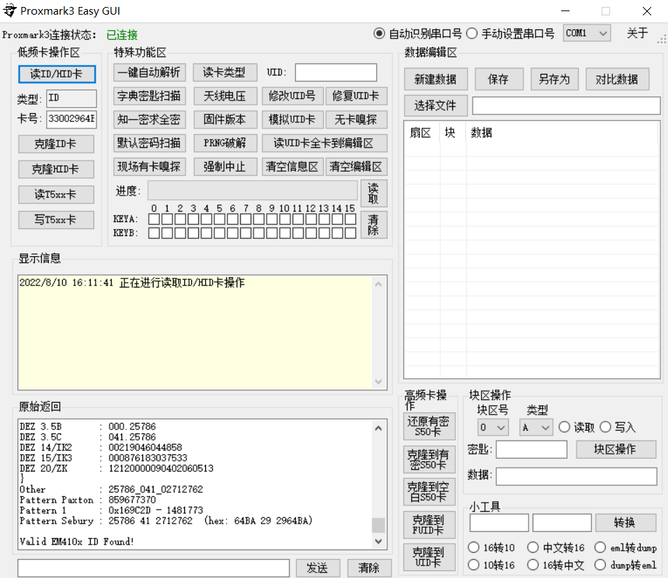
点击克隆为HID卡后再次点击读ID/HID卡识别为了 HID 卡
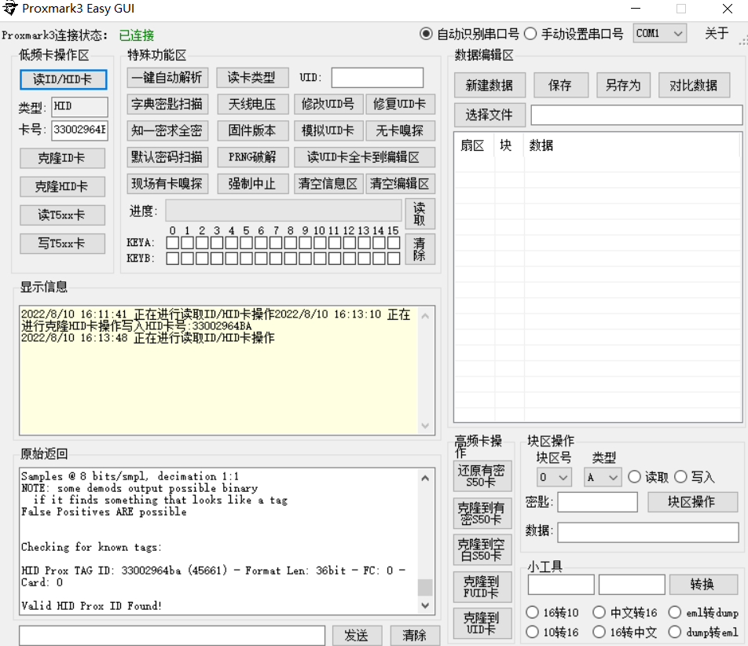
在低频卡操作区还有读/写T5xx卡的选项，我们先读一下卡上的值
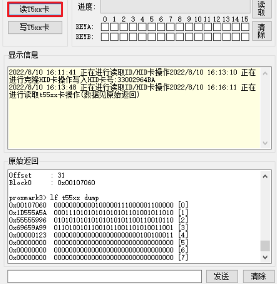
然后往第四个块写 0x321
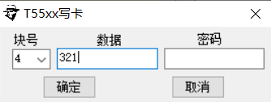
然后再读取（这里不知道是设备的问题还是软件的问题，写完之后再读取需要重新拔插设备）
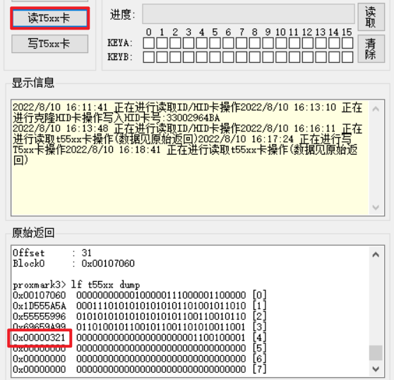
高频卡操作
把小区的门禁卡放在高频识别区域，点击一键自动解析识别为UID卡
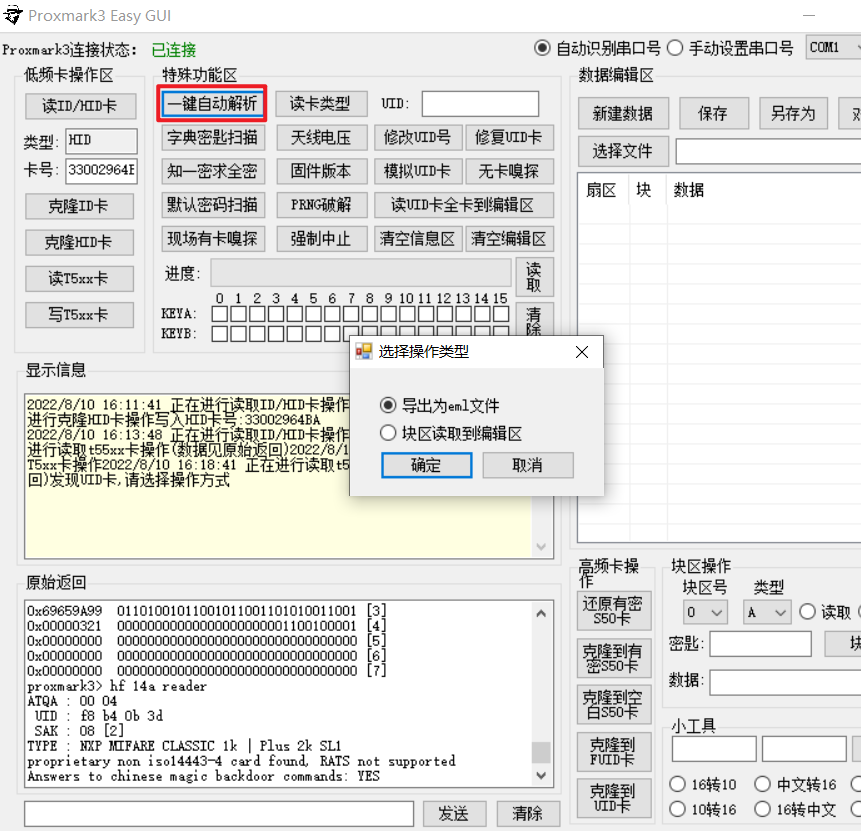
将区块读取到编辑区
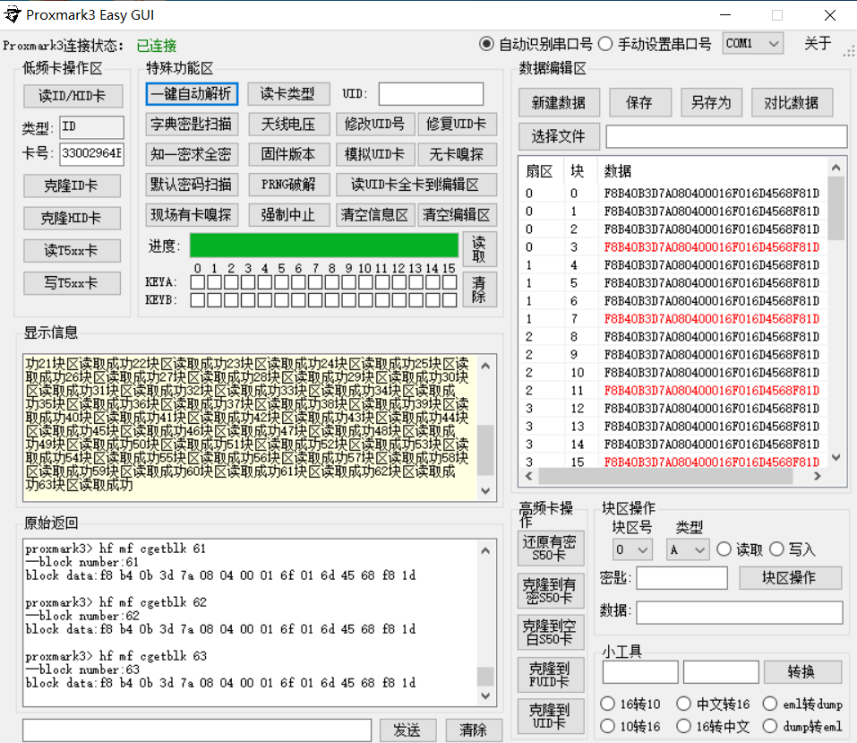
可以拿一张空白的卡选择右下角的高频卡操作克隆到新卡中
保命救砖
设备留出了JTAG接口，使用jlink，选择芯片 AT91SAM7S256，连接就行，需要注意的是国产的可能都开着什么读写保护，需要把 55 引脚与 3V3 短接 一下（3秒左右），然后再与 GND 短接一下（一秒左右） 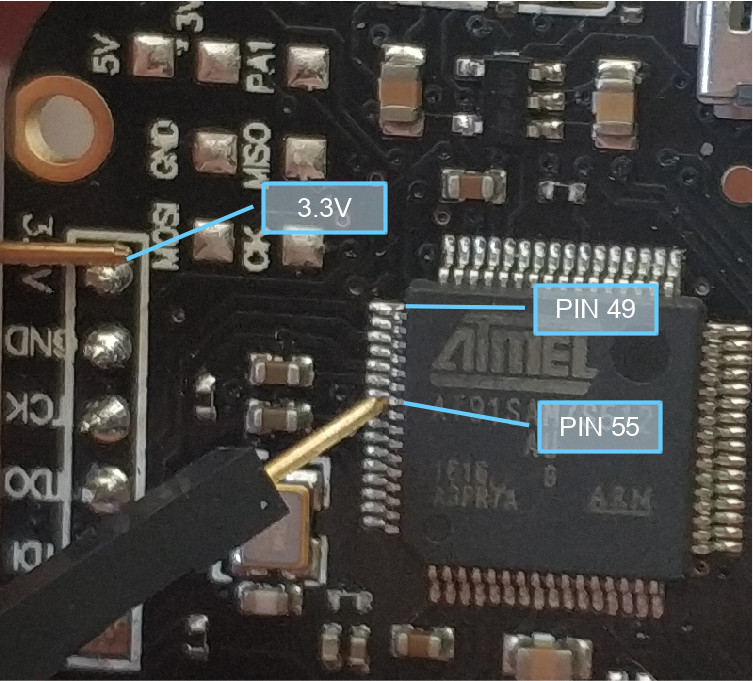 然后把固件里的 proxmark3/recovery/proxmark3_recovery.bin 放到 jlink 里面，地址是 0x100000，然后烧进去就行了，这里有个问题，我直接烧录自己编译的 proxmark3_recovery.bin 会提示：does not fit into selected flash sectors，烧录之前淘宝客服给的资料中的 proxmark3_recovery.bin 就没问题
命令行操作
安装依赖：
sudo apt-get install --no-install-recommends git ca-certificates build-essential pkg-config \
libreadline-dev gcc-arm-none-eabi libnewlib-dev qtbase5-dev libbz2-dev libbluetooth-dev libpython3-dev libssl-dev
下载源码：
git clone https://github.com/RfidResearchGroup/proxmark3.git
编译
make PLATFORM=PM3OTHER clean && make PLATFORM=PM3OTHER all
安装
sudo make install
~~刷写固件，摁住板子侧边的按钮，然后插入 USB~~
./pm3-flash-all
~~这一步如果失败了估计是 bootrom 不匹配，建议直接用 jlink 把 bootrom 烧录进去，后续直接使用 pm3 运行即可~~ 别那么麻烦了，直接下编译好的 windows 固件和 bat 烧写脚本：https://www.proxmarkbuilds.org 自动识别，烧写进去的固件 windows 和 linux 都可用，完美！
低频卡
所有的命令都可以使用 pm3 进入到命令行交互界面运行，也可以使用 pm3 -c "命令" 不进入交互界面直接执行
[usb] pm3 --> lf search
[=] NOTE: some demods output possible binary
[=] if it finds something that looks like a tag
[=] False Positives ARE possible
[=]
[=] Checking for known tags...
[=]
[+] EM 410x ID 33002964BA
[+] EM410x ( RF/64 )
[=] -------- Possible de-scramble patterns ---------
[+] Unique TAG ID : CC0094265D
[=] HoneyWell IdentKey
[+] DEZ 8 : 02712762
[+] DEZ 10 : 0002712762
[+] DEZ 5.5 : 00041.25786
[+] DEZ 3.5A : 051.25786
[+] DEZ 3.5B : 000.25786
[+] DEZ 3.5C : 041.25786
[+] DEZ 14/IK2 : 00219046044858
[+] DEZ 15/IK3 : 000876183037533
[+] DEZ 20/ZK : 12120000090402060513
[=]
[+] Other : 25786_041_02712762
[+] Pattern Paxton : 859677370 [0x333DA2BA]
[+] Pattern 1 : 1481773 [0x169C2D]
[+] Pattern Sebury : 25786 41 2712762 [0x64BA 0x29 0x2964BA]
[+] VD / ID : 051 / 0002712762
[=] ------------------------------------------------
[+] Valid EM410x ID found!
[+] Chipset detection: T55xx
可以看到识别到一张 EM410X 卡，这种卡只有一个 ID 没有其他数据，但其实这是一张 T55XX 卡克隆来的，T55XX 卡除了 ID 之外还有个扇区可以存储数据
[usb] pm3 --> lf em 410x reader
[+] EM 410x ID 330029ABCD
EM410X 也就是 ID 卡，出厂固化 ID，只能读不能写，这里用一张 T55XX 卡来克隆
[usb] pm3 --> lf em 410x clone --id 330029abcd
[+] Preparing to clone EM4102 to T55x7 tag with EM Tag ID 330029ABCD (RF/64)
[#] Clock rate: 64
[#] Tag T55x7 written with 0xff98c001654be376
[+] Done
[?] Hint: try `lf em 410x reader` to verify
可以专门对 T55XX 卡进行探测
[usb] pm3 --> lf t55xx detect
[=] Chip type......... T55x7
[=] Modulation........ ASK
[=] Bit rate.......... 5 - RF/64
[=] Inverted.......... No
[=] Offset............ 33
[=] Seq. terminator... Yes
[=] Block0............ 00148040 (auto detect)
[=] Downlink mode..... default/fixed bit length
[=] Password set...... No
可以通过 dump 获取到 T55X 卡的内容
[usb] pm3 --> lf t55x dump
[+] Reading Page 0:
[+] blk | hex data | binary | ascii
[+] ----+----------+----------------------------------+-------
[+] 00 | 00148040 | 00000000000101001000000001000000 | ...@
[+] 01 | FF98C001 | 11111111100110001100000000000001 | ....
[+] 02 | 64C4DE90 | 01100100110001001101111010010000 | d...
[+] 03 | 69659A99 | 01101001011001011001101010011001 | ie..
[+] 04 | 00000123 | 00000000000000000000000100100011 | ...#
[+] 05 | 00000000 | 00000000000000000000000000000000 | ....
[+] 06 | 00000000 | 00000000000000000000000000000000 | ....
[+] 07 | 00000000 | 00000000000000000000000000000000 | ....
[+] Reading Page 1:
[+] blk | hex data | binary | ascii
[+] ----+----------+----------------------------------+-------
[+] 00 | 00148040 | 00000000000101001000000001000000 | ...@
[+] 01 | E0152403 | 11100000000101010010010000000011 | ..$.
[+] 02 | 2A37D2F3 | 00101010001101111101001011110011 | *7..
[+] 03 | 00A00003 | 00000000101000000000000000000011 | ....
将指定数据写入 T55X 卡
[usb] pm3 --> lf t55xx write -b 3 -d 11223344
[=] Writing page 0 block: 03 data: 0x11223344
T55X 卡片是可以设置密码的，首先我们先把 T55XX 卡清除一下
[usb] pm3 --> lf t55xx wipe
[=] Target T55x7 tag
[=] Default configuration block 000880E0
[=] Begin wiping...
[=] Writing page 0 block: 00 data: 0x000880E0
[=] Writing page 0 block: 01 data: 0x00000000
[=] Writing page 0 block: 02 data: 0x00000000
[=] Writing page 0 block: 03 data: 0x00000000
[=] Writing page 0 block: 04 data: 0x00000000
[=] Writing page 0 block: 05 data: 0x00000000
[=] Writing page 0 block: 06 data: 0x00000000
[=] Writing page 0 block: 07 data: 0x00000000
然后通过往第七个区块写入数据的方式给卡片设置一个密码
[usb] pm3 --> lf t55xx write -b 7 -d 12345678
[=] Writing page 0 block: 07 data: 0x12345678
此时的卡状态应该是是这样的
[usb] pm3 --> lf t55xx dump
[+] Reading Page 0:
[+] blk | hex data | binary | ascii
[+] ----+----------+----------------------------------+-------
[+] 00 | 000880E0 | 00000000000010001000000011100000 | ....
[+] 01 | 00000000 | 00000000000000000000000000000000 | ....
[+] 02 | 00000000 | 00000000000000000000000000000000 | ....
[+] 03 | 00000000 | 00000000000000000000000000000000 | ....
[+] 04 | 00000000 | 00000000000000000000000000000000 | ....
[+] 05 | 00000000 | 00000000000000000000000000000000 | ....
[+] 06 | 00000000 | 00000000000000000000000000000000 | ....
[+] 07 | 12345678 | 00010010001101000101011001111000 | .4Vx
我们只需要设置第 0 块的某一个二进制位为 1 就可以使密码生效
| 十六进制 | 二进制 |
|---|---|
| 000880E0 | 0000000000001000100000001110 0000 |
| 000880F0 | 0000000000001000100000001111 0000 |
因此，我们把 0 块写为 000880F0
[usb] pm3 --> lf t55xx write -b 0 -d 000880f0
[=] Writing page 0 block: 00 data: 0x000880F0
这样一来再去用探测卡片就探测不出来了，因为它加密了
[usb] pm3 --> lf t55xx detect
[!] Could not detect modulation automatically. Try setting it manually with 'lf t55xx config'
我们需要带着密码去探测
[usb] pm3 --> lf t55xx detect -p 12345678
[=] Chip type......... T55x7
[=] Modulation........ ASK
[=] Bit rate.......... 2 - RF/32
[=] Inverted.......... No
[=] Offset............ 33
[=] Seq. terminator... Yes
[=] Block0............ 000880F0 (auto detect)
[=] Downlink mode..... default/fixed bit length
[=] Password set...... Yes
[=] Password.......... 12345678
后续读写操作也得带着密码进行，另外带着密码读取没有设置密码的卡片可能会导致锁卡，所以官方软件对带着密码读取做了限制，需要加上 -o 的参数，除非你知道卡片真用了密码，否则不建议乱读
[usb] pm3 --> lf t55xx read -b 1 -p 12345678 -o
[+] Reading Page 0:
[+] blk | hex data | binary | ascii
[+] ----+----------+----------------------------------+-------
[=] Safety check overridden - proceeding despite risk
[+] 01 | 00000000 | 00000000000000000000000000000000 | ....
如果想把密码取消掉可以把 0 块重新写回 000880E0
[usb] pm3 --> lf t55xx write -b 0 -d 000880e0 -p 12345678
[=] Writing page 0 block: 00 data: 0x000880E0 pwd: 0x12345678
[usb] pm3 --> lf t55xx detect
[=] Chip type......... T55x7
[=] Modulation........ ASK
[=] Bit rate.......... 2 - RF/32
[=] Inverted.......... No
[=] Offset............ 33
[=] Seq. terminator... Yes
[=] Block0............ 000880E0 (auto detect)
[=] Downlink mode..... default/fixed bit length
[=] Password set...... No
高频卡
需要关注的信息有：
proxmark3> hf 14a reader
#db# DownloadFPGA(len: 42096)
ATQA : 00 04
UID : d5 7c ad 1f # 卡片出场固化的UID号码
SAK : 08 [2] # 卡片容量
TYPE : NXP MIFARE CLASSIC 1k | Plus 2k SL1 # 卡片类型
proprietary non iso14443-4 card found, RATS not supported
Answers to chinese magic backdoor commands: YES # 是否支持修改UID
这就是一张 M1 的卡片，我们来读取一下看看
[usb] pm3 --> hf mf cgetblk --blk 0 # 区块 (0-63)
[=] # | sector 00 / 0x00 | ascii
[=] ----+-------------------------------------------------+-----------------
[=] 0 | 76 2B 0D 3D 6D 08 04 00 01 6F 01 6D 45 68 F8 1D | v+.=m....o.mEh..
M1 卡总共的存储空间是 1k 的大小，一共 16 个扇区，每个扇区四个块。M1 卡里面除了第 0 个扇区存在不同，其他扇区结构完全一样，第 0 个扇区的第 0 块是不需要密码也可以读取的，其中前四字节是卡片的 UID，第五个字节是一个 bcc 校验位，用前四个字节互相异或得到这个值：D5^7C^AD^1F = 1B，剩下的是厂商数据，由厂商自定义 正常其他扇区前三个块存放数据，最后一块存放密码（前后六个字节是密码，两个密码可以通过权限来设置，比如读扇区用前六个字节，写扇区用后六个字节，中间四字节是管理密码权限） 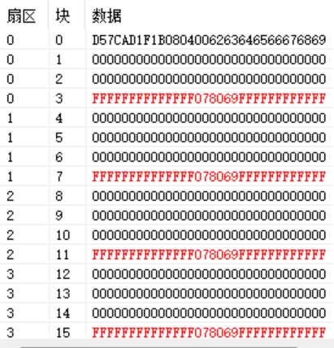
proxmark3> hf mf csetblk --blk 1 --data 000102030405060708090a0b0c0d0e0f # 区块 数据
Writing block number: 1 data:000102030405060708090A0B0C0D0E0F
proxmark3> hf mf chk --all
[=] Start check for keys...
[=] .................................
[=] time in checkkeys 2 seconds
[=] testing to read key B...
[+] found keys:
[+] -----+-----+--------------+---+--------------+----
[+] Sec | Blk | key A |res| key B |res
[+] -----+-----+--------------+---+--------------+----
[+] 000 | 003 | FFFFFFFFFFFF | 1 | FFFFFFFFFFFF | 1
[+] 001 | 007 | FFFFFFFFFFFF | 1 | FFFFFFFFFFFF | 1
[+] 002 | 011 | FFFFFFFFFFFF | 1 | FFFFFFFFFFFF | 1
[+] 003 | 015 | FFFFFFFFFFFF | 1 | FFFFFFFFFFFF | 1
[+] 004 | 019 | FFFFFFFFFFFF | 1 | FFFFFFFFFFFF | 1
[+] 005 | 023 | FFFFFFFFFFFF | 1 | FFFFFFFFFFFF | 1
[+] 006 | 027 | FFFFFFFFFFFF | 1 | FFFFFFFFFFFF | 1
[+] 007 | 031 | FFFFFFFFFFFF | 1 | FFFFFFFFFFFF | 1
[+] 008 | 035 | FFFFFFFFFFFF | 1 | FFFFFFFFFFFF | 1
[+] 009 | 039 | FFFFFFFFFFFF | 1 | FFFFFFFFFFFF | 1
[+] 010 | 043 | FFFFFFFFFFFF | 1 | FFFFFFFFFFFF | 1
[+] 011 | 047 | FFFFFFFFFFFF | 1 | FFFFFFFFFFFF | 1
[+] 012 | 051 | FFFFFFFFFFFF | 1 | FFFFFFFFFFFF | 1
[+] 013 | 055 | FFFFFFFFFFFF | 1 | FFFFFFFFFFFF | 1
[+] 014 | 059 | FFFFFFFFFFFF | 1 | FFFFFFFFFFFF | 1
[+] 015 | 063 | FFFFFFFFFFFF | 1 | FFFFFFFFFFFF | 1
[+] -----+-----+--------------+---+--------------+----
[+] ( 0:Failed / 1:Success )
proxmark3> hf mf nested 1 0 A FFFFFFFFFFFF
Testing known keys. Sector count=16
nested...
Time in nested: 4.391 (inf sec per key)
-----------------------------------------------
Iterations count: 0
|---|----------------|---|----------------|---|
|sec|key A |res|key B |res|
|---|----------------|---|----------------|---|
|000| ffffffffffff | 1 | ffffffffffff | 1 |
|001| ffffffffffff | 1 | ffffffffffff | 1 |
|002| ffffffffffff | 1 | ffffffffffff | 1 |
|003| ffffffffffff | 1 | ffffffffffff | 1 |
|004| ffffffffffff | 1 | ffffffffffff | 1 |
|005| ffffffffffff | 1 | ffffffffffff | 1 |
|006| ffffffffffff | 1 | ffffffffffff | 1 |
|007| ffffffffffff | 1 | ffffffffffff | 1 |
|008| ffffffffffff | 1 | ffffffffffff | 1 |
|009| ffffffffffff | 1 | ffffffffffff | 1 |
|010| ffffffffffff | 1 | ffffffffffff | 1 |
|011| ffffffffffff | 1 | ffffffffffff | 1 |
|012| ffffffffffff | 1 | ffffffffffff | 1 |
|013| ffffffffffff | 1 | ffffffffffff | 1 |
|014| ffffffffffff | 1 | ffffffffffff | 1 |
|015| ffffffffffff | 1 | ffffffffffff | 1 |
|---|----------------|---|----------------|---|
补充些知识： 如果一个读卡器周围有多张卡，读卡器的电磁场激活卡片后，卡片会把自己的 UID 回复给读卡器，读卡器根据 UID 选择卡片，然后读卡器与卡片进行认证，通过之后才进行正常的数据传输 在 14443-3 中读卡器（近距离耦合设备）简写为 PCD，卡片（近距离集成电路卡片）简写为 PICC，以下内容都是源自对标准的解读和对应
2022 DCTF SecureCard
唯一 WP：https://writeup.enj.oye.rs/posts/dctf_2022/securecard/ 我们来实际看一下过程，这也是 2022 DCTF 的 SecureCard 题目，附件： https://github.com/DragonSecSI/DCTF-2022/blob/master/challs/securecard/chall/card.trace
Src | Data (! denotes parity error) | CRC | Annotation
-----+-------------------------------------------------------------------------+-----+--------------------
Rdr |52 | | WUPA
Tag |44 03 | |
Rdr |93 20 | | ANTICOLL
Tag |88 04 29 44 e1 | |
Rdr |93 70 88 04 29 44 e1 a1 33 | ok | SELECT_UID
Tag |24 d8 36 | |
Rdr |95 20 | | ANTICOLL-2
Tag |d2 db 6b 80 e2 | |
Rdr |95 70 d2 db 6b 80 e2 b8 34 | ok | SELECT_UID-2
Tag |20 fc 70 | |
Rdr |e0 80 31 73 | ok | RATS
Tag |06 75 77 81 02 80 02 f0 | ok |
Rdr |0a 00 5a 37 13 00 57 a2 | ok | SELECT APPLICATION (appId 001337)
Tag |0a 00 00 6e d6 | |
Rdr |0b 00 aa 00 9a c4 | ok | AUTH AES (keyNo 0)
Tag |0b 00 af a7 18 45 be 52 8a 7e 8e 08 16 3d 06 3d 95 42 | |
|aa c0 b6 | ok |
Rdr |0a 00 af 2c 2a bd a6 a1 f9 df f5 0b 87 37 6c 30 57 5b | |
|c3 0e 62 4f cd f6 6f 04 0a 3c a1 65 47 47 e2 81 47 28 | |
|b8 | ok | AUTH FRAME / NEXT FRAME
Tag |0a 00 00 60 f9 01 97 5a 30 25 78 5c 0d 43 70 8a de 38 | |
|b2 de b2 | ok |
Rdr |0b 00 f5 01 2c 85 | ok | GET FILE SETTINGS (fileId 01)
Tag |0b 00 00 00 03 00 00 19 00 00 18 6b 65 df 80 ba c2 87 | |
|9d be | ok |
Rdr |0a 00 bd 01 00 00 00 00 00 00 ff 7c | ok | READ DATA (fileId 01, offset 0, len 0)
Tag |0a 00 00 4c be b5 2c 49 15 35 0e af b5 dc fc a9 52 d9 | |
|50 99 4c 12 a1 cf 07 09 82 33 99 57 b4 40 a1 0a 36 01 | |
|7c | ok |
WUPA 是唤醒 Type A 卡的指令（同理 WUPB 是唤醒 Type B 的），然后卡片收到 WUPA 后会回复 ATQA 告诉读卡器是否遵守面向比特的防冲突机制，这里回复的是 44 03，但 ISO14443 规定的传输方式是首先传输低位，所以实际值是 03 44，格式如下： 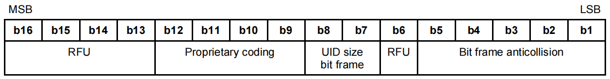 实际对应到 ATQA 编码的表中为，RFU 全为 0，Bit frame anticollision 中只有一个为 1 即可：
| MSB | LSB | ||||||||||||||
|---|---|---|---|---|---|---|---|---|---|---|---|---|---|---|---|
| b16 | b15 | b14 | b13 | b12 | b11 | b10 | b9 | b8 | b7 | b6 | b5 | b4 | b3 | b2 | b1 |
| 0 | 0 | 0 | 0 | 0 | 0 | 1 | 1 | 0 | 1 | 0 | 0 | 0 | 1 | 0 | 0 |
| RFU | Proprietary coding | UID size | RFU | Bit frame anticollision |
UID size 表示 UID 的长度，"00" 为 4 字节，"01" 为 7 字节，"10" 为 10 字节：
| b8 | b7 | 含义 |
|---|---|---|
| 0 | 0 | UID大小：单个 |
| 0 | 1 | UID大小：double |
| 1 | 0 | UID大小：三倍 |
继续往下，进入防冲突循环，读卡器此时并不知道卡片的 UID，因此读卡器发送 93 20，其中 SEL 是 93，NVB 是 20
| SEL | NVB |
|---|---|
| 93 | 20 |
SEL 的 93 表示的是 Select cascade level 1
| b8 | b7 | b6 | b5 | b4 | b3 | b2 | b1 | 含义 |
|---|---|---|---|---|---|---|---|---|
| 1 | 0 | 0 | 1 | 0 | 0 | 1 | 1 | '93'：选择级联级别1 |
| 1 | 0 | 0 | 1 | 0 | 1 | 0 | 1 | '95'：选择级联级别2 |
| 1 | 0 | 0 | 1 | 0 | 1 | 1 | 1 | '97'：选择级联级别3 |
| 1 | 0 | 0 | 1 | 除上述值之外的其他值 | RFU |
NVB 的 20 表示有效位数。高四位被称为：字节计数，是读卡器发送的所有有效数据位的数量除以 8 的整数部分，低四位被称为：位计数，是读卡器发送的所有有效数据的数量模 8
| b8 | b7 | b6 | b5 | 含义 |
|---|---|---|---|---|
| 0 | 0 | 1 | 0 | 字节计数=2 |
| 0 | 0 | 1 | 1 | 字节计数=3 |
| 0 | 1 | 0 | 0 | 字节计数=4 |
| 0 | 1 | 0 | 1 | 字节计数=5 |
| 0 | 1 | 1 | 0 | 字节计数=6 |
| 0 | 1 | 1 | 1 | 字节计数=7 |
| b4 | b3 | b2 | b1 | 含义 |
|---|---|---|---|---|
| 0 | 0 | 0 | 0 | 位计数=0 |
| 0 | 0 | 0 | 1 | 位计数=1 |
| 0 | 0 | 1 | 0 | 位计数=2 |
| 0 | 0 | 1 | 1 | 位计数=3 |
| 0 | 1 | 0 | 0 | 位计数=4 |
| 0 | 1 | 0 | 1 | 位计数=5 |
| 0 | 1 | 1 | 0 | 位计数=6 |
| 0 | 1 | 1 | 1 | 位计数=7 |
这时候所有收到的卡片应该回复自己的 UID，88 04 29 44 e1，格式如下：
| UID | BCC | |||
|---|---|---|---|---|
| 88 | 04 | 29 | 44 | e1 |
其中 UID 又分为 CT（88） 和 UID_CLn（042944） 卡片成功回复了自己的 UID，读卡器收到之后把 NVB 设置为 70，然后选择卡片 93 70 88 04 29 44 e1 a1 33
| SEL | NVB | UID | BCC | CRC | ||||
|---|---|---|---|---|---|---|---|---|
| 93 | 70 | 88 | 04 | 29 | 44 | e1 | a1 | 33 |
然后卡片向读卡器回复 SAK （24 d8 36）
| 24 的高八位 表示是否符合14443-4 | 24 的低八位 表示 UID 是否完成 | CRC |
|---|---|---|
| 0010 完成 | 0100 未完成 | 36D8 |
这里的 UID 未完成所以继续防冲突循环，选择卡片，95 20 表示 ANTICOLL-2
| SEL | NVB |
|---|---|
| 95 | 20 |
然后得到另一张卡片 UID：d2 db 6b 80 e2
| UID | BCC | |||
|---|---|---|---|---|
| d2 | db | 6b | 80 | e2 |
这时候再次选择卡片：95 70 d2 db 6b 80 e2 b8 34
| SEL | NVB | UID | BCC | CRC | ||||
|---|---|---|---|---|---|---|---|---|
| 95 | 70 | d2 | db | 6b | 80 | e2 | 34b8 |
这次卡片回复了读卡器的 SAK 就完成了：20 fc 70
| 20 的高八位 表示是否符合14443-4 | 20 的低八位 表示 UID 是否完成 | CRC |
|---|---|---|
| 0010 符合 | 0000 完成 | 70fc |
然后读卡器发送 RATS 获取一些具体类型和配置参数什么的：e0 80 31 73 FSDI（Frame Size Diversification Identifier）：FSDI字段指示读卡器请求的最大帧大小。它决定了读卡器和智能卡之间数据交换的最大帧大小 CID（Card Identifier）：CID字段用于标识智能卡。读卡器可以使用CID来区分与之通信的多个智能卡
| Start byte | FSDI | CID | CRC |
|---|---|---|---|
| e0 | 8 | 0 | 7331 |
卡片回复 ATS ：06 75 77 81 02 80 02 f0 TL (Type Length) 字节：指示后续数据的长度，也包含自身 T0 字节：指示卡片类型和支持的协议类型。其中包含以下信息： Bit 8：卡片类型标识位，用于识别卡片类型 Bit 7-5：卡片使用的协议类型 Bit 4-1：TA、TB、TC字节的长度，指示后续的TA、TB、TC字节的个数 TA、TB、TC 字节：这些字节包含卡片支持的具体协议和传输速率信息。每个字节都提供了不同的参数： TA：表示卡片支持的通信传输速率和时钟频率的组合 TB：提供与特定协议相关的进一步参数，如位速率和调制方式 TC：提供更多的参数，如FSDI（Frame Size Diversification Identifier）和CID（Card Identifier）等 Historical Bytes：这些字节包含了卡片的历史信息和其他可选的应用特定数据。它们通常包含应用版本号、卡片制造商信息、卡片容量等
剩下的在标准里面找不到了，都是 0a 00 和 0b 00 打头的，通过 pm3 的解析可以看出来，首先选择了一个 APPLICATION（appId 001337）
447616 | 456992 | Rdr |0a 00 5a 37 13 00 57 a2 | ok | SELECT APPLICATION (appId 001337)
467780 | 473668 | Tag |0a 00 00 6e d6 | |
然后进行了 AES 的一个认证
833536 | 840608 | Rdr |0b 00 aa 00 9a c4 | ok | AUTH AES (keyNo 0)
869572 | 893892 | Tag |0b 00 af a7 18 45 be 52 8a 7e 8e 08 16 3d 06 3d 95 42 | |
| | |aa c0 b6 | ok |
1233792 | 1276512 | Rdr |0a 00 af 2c 2a bd a6 a1 f9 df f5 0b 87 37 6c 30 57 5b | |
| | |c3 0e 62 4f cd f6 6f 04 0a 3c a1 65 47 47 e2 81 47 28 | |
| | |b8 | ok | AUTH FRAME / NEXT FRAME
1289796 | 1314052 | Tag |0a 00 00 60 f9 01 97 5a 30 25 78 5c 0d 43 70 8a de 38 | |
然后选择了一个文件的设置并读取了其中的的数据
1632512 | 1639584 | Rdr |0b 00 f5 01 2c 85 | ok | GET FILE SETTINGS (fileId 01)
1662788 | 1685892 | Tag |0b 00 00 00 03 00 00 19 00 00 18 6b 65 df 80 ba c2 87 | |
| | |9d be | ok |
2011904 | 2025888 | Rdr |0a 00 bd 01 00 00 00 00 00 00 ff 7c | ok | READ DATA (fileId 01, offset 0, len 0)
2050628 | 2093380 | Tag |0a 00 00 4c be b5 2c 49 15 35 0e af b5 dc fc a9 52 d9 | |
| | |50 99 4c 12 a1 cf 07 09 82 33 99 57 b4 40 a1 0a 36 01 | |
| | |7c | ok |
从 nfc-tools 源码 中可以看到 mifare_desfire 的认证方法调用了 mifare_desfire_session_key_new 函数来生成 session_key 作为加密密钥
static int
authenticate(FreefareTag tag, uint8_t cmd, uint8_t key_no, MifareDESFireKey key)
{
int rc;
ASSERT_ACTIVE(tag); //检查卡片书否处于激活状态
memset(MIFARE_DESFIRE(tag)->ivect, 0, MAX_CRYPTO_BLOCK_SIZE);
MIFARE_DESFIRE(tag)->authenticated_key_no = NOT_YET_AUTHENTICATED; //设置初始化向量
free(MIFARE_DESFIRE(tag)->session_key); //重置一些标签的属性，包括认证状态、会话密钥等
MIFARE_DESFIRE(tag)->session_key = NULL;
MIFARE_DESFIRE(tag)->authentication_scheme = (AUTHENTICATE_LEGACY == cmd) ? AS_LEGACY : AS_NEW; //根据传进来的参数选择加密方式
BUFFER_INIT(cmd1, 2); //创建缓冲区
BUFFER_INIT(res, 17);
BUFFER_APPEND(cmd1, cmd);
BUFFER_APPEND(cmd1, key_no);
if ((rc = MIFARE_DESFIRE_TRANSCEIVE(tag, cmd1, __cmd1_n, res, __res_size, &__res_n)) < 0)
return rc; //发送认证命令给卡片
size_t key_length = __res_n - 1;
uint8_t PICC_E_RndB[16];
memcpy(PICC_E_RndB, res, key_length); //把卡片产生的的随机数保存到PICC_E_RndB
uint8_t PICC_RndB[16];
memcpy(PICC_RndB, PICC_E_RndB, key_length); //又把PICC_E_RndB保存到PICC_RndB
mifare_cypher_blocks_chained(tag, key, MIFARE_DESFIRE(tag)->ivect, PICC_RndB, key_length, MCD_RECEIVE, MCO_DECYPHER); //这是对传过来的随机数进行解密，得到真的随机数
uint8_t PCD_RndA[16];
RAND_bytes(PCD_RndA, 16); //本地产生PCD随机数
uint8_t PCD_r_RndB[16];
memcpy(PCD_r_RndB, PICC_RndB, key_length); //将卡片的随机数明文复制到PCD_r_RndB
rol(PCD_r_RndB, key_length); //将卡片随机数进行左移
uint8_t token[32];
memcpy(token, PCD_RndA, key_length);
memcpy(token + key_length, PCD_r_RndB, key_length); //将PCD随机数和PICC随机数拼接起来
//下面对拼起来的随机数进行了加密操作
mifare_cypher_blocks_chained(tag, key, MIFARE_DESFIRE(tag)->ivect, token, 2 * key_length, MCD_SEND, (AUTHENTICATE_LEGACY == cmd) ? MCO_DECYPHER : MCO_ENCYPHER);
BUFFER_INIT(cmd2, 33);
BUFFER_APPEND(cmd2, 0xAF);
BUFFER_APPEND_BYTES(cmd2, token, 2 * key_length);
if ((rc = MIFARE_DESFIRE_TRANSCEIVE(tag, cmd2, __cmd2_n, res, __res_size, &__res_n)) < 0) //发送PCD和PICC拼接起来加密后的随机数
return rc;
uint8_t PICC_E_RndA_s[16];
memcpy(PICC_E_RndA_s, res, key_length); //再把卡片响应的内容放到PICC_E_RndA_s
uint8_t PICC_RndA_s[16];
memcpy(PICC_RndA_s, PICC_E_RndA_s, key_length);//并解密卡片相应的数据
mifare_cypher_blocks_chained(tag, key, MIFARE_DESFIRE(tag)->ivect, PICC_RndA_s, key_length, MCD_RECEIVE, MCO_DECYPHER);
uint8_t PCD_RndA_s[key_length];
memcpy(PCD_RndA_s, PCD_RndA, key_length); //
rol(PCD_RndA_s, key_length); //PCD随机数和PICC随机数拼接起来的那个随机数循环左移
if (0 != memcmp(PCD_RndA_s, PICC_RndA_s, key_length)) { //将解密完成的PCD_RndA_s和读卡器自己左移的随机数对比
#ifdef WITH_DEBUG
hexdump(PCD_RndA_s, key_length, "PCD ", 0);
hexdump(PICC_RndA_s, key_length, "PICC ", 0);
#endif
errno = EACCES;
return -1; //不对的话就退出了
}
MIFARE_DESFIRE(tag)->authenticated_key_no = key_no;
MIFARE_DESFIRE(tag)->session_key = mifare_desfire_session_key_new(PCD_RndA, PICC_RndB, key); //对的话根据两个随机数生成密钥
memset(MIFARE_DESFIRE(tag)->ivect, 0, MAX_CRYPTO_BLOCK_SIZE);
switch (MIFARE_DESFIRE(tag)->authentication_scheme) {
case AS_LEGACY:
break;
case AS_NEW:
cmac_generate_subkeys(MIFARE_DESFIRE(tag)->session_key);
break;
}
return 0;
}
其中生成的 session_key 主要由前两次交换的随机数生成，生成的方法是 a[:4] + b[:4] + a[12:16] + b[12:16] ，a 是 PCD（读卡器）的随机数，b 是 PICC（卡片）的随机数
case MIFARE_KEY_AES128:
memcpy(buffer, rnda, 4);
memcpy(buffer + 4, rndb, 4);
memcpy(buffer + 8, rnda + 12, 4);
memcpy(buffer + 12, rndb + 12, 4);
key = mifare_desfire_aes_key_new(buffer);
整体流程梳理如下 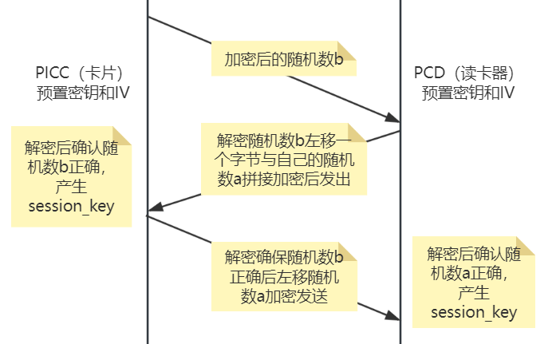 对应于嗅探的数据中，a71845be528a7e8e08163d063d9542aa 是卡片生成的随机数加密后的数据 2c2abda6a1f9dff50b87376c30575bc30e624fcdf66f040a3ca1654747e28147 是读卡器生成的随机数a 和随机数b 拼接起来加密后的数据 60f901975a3025785c0d43708ade38b2 是卡片加密随机数a 后的数据 最终生成的 session_key 就是把两个明文拼接一下 010203044e71b50c131415160e816b38 通过 python 实现一下这个过程
from Crypto.Cipher import AES
key = b'\x00'*16 #定义初始key和iv
iv = b'\x00'*16
encrypt = AES.new(key, AES.MODE_CBC, iv=iv) #定义了一个加密方法
decrypt = AES.new(key, AES.MODE_CBC, iv=iv) #定义了一个解密方法
b = b'Nq\xb5\x0c\xf7Z\xde\xe4\xda;\x11=\x0e\x81k8' #定义明文随机数b
card_encrypted_b = encrypt.encrypt(b) #将明文b加密为card_encrypted_b
assert card_encrypted_b == bytes.fromhex('a71845be528a7e8e08163d063d9542aa') #检查加密后的b是否与嗅探到的数据相同
assert b == decrypt.decrypt(card_encrypted_b) #将密文解密对应了认证过程中的读卡器解密卡片发过来的随机数b
a = b'\x01\x02\x03\x04\x05\x06\x07\x08\t\x10\x11\x12\x13\x14\x15\x16' #读卡器生成明文随机数a
reader_encrypted_a_plus_b1 = encrypt.encrypt(a + b[1:]+ bytes([b[0]])) #读卡器将随机数a和左移后的随机数b进行拼接
#这里判断一下拼接加密后的数据是不是和嗅探到的数据相同
assert reader_encrypted_a_plus_b1 == bytes.fromhex('2c2abda6a1f9dff50b87376c30575bc30e624fcdf66f040a3ca1654747e28147')
a_plus_b1 = decrypt.decrypt(reader_encrypted_a_plus_b1) #将嗅探到的数据进行解密，对应卡片解密读卡器的数据
b1 = a_plus_b1[16:] #从加密后解密的数据中提取了随机数b的部分
assert b == bytes([b1[-1]])+b1[:-1] #移位还原判断是不是b的明文，这里对应了卡片确认读卡器加密的随机数b是否正确
card_encrypted_a1 = encrypt.encrypt(a[1:] + bytes([a[0]])) #卡片左移随机数a加密发送给读卡器
assert card_encrypted_a1 == bytes.fromhex('60f901975a3025785c0d43708ade38b2') #判断一下加密后的数据是不是和嗅探到的数据相同
a1 = decrypt.decrypt(card_encrypted_a1) #对应读卡器解密随机数a
assert a == bytes([a1[-1]])+a1[:-1] #判断是否是自己生成的随机数a
session_key = a[:4] + b[:4] + a[12:16] + b[12:16] #生成session_key
print("session key:",session_key.hex())
但是问题来了，通过这个 key 和全 0 的 IV 解密的最后的数据只有一部分 flag
b'\x98{\xa4WY {\xba\xbf}<@\x90\xb9\xb3\x06pl1c4t3d}V\xb7\xd5S\x80\x00\x00'
肯定是 IV 出问题了，阅读源码发现尽管每次认证都会重置 IV 为 0，但是后续使用时没有再重置过 IV 了，所以 IV 可能变为了一个未知数，原 WP 是通过自己编写了一个 C 语言程序调用 libfreefare 这个库，不断地计算不断的尝试，最终确定 IV 是 6d52ed2a407e1cb75c276fa4a5981a95 的时候可以解出来 flag。但是我们仔细观察就会发现，实际上在完成认证之后进行了三次通信，分别传输的数据为：F501、0003000019000000、BD01000000000000，我们只需要以这三轮的 data 为参数，以新计算出来的 cmac 为下一轮的 IV 就能得到传输 flag 时使用的 IV 了 我不太会用 libfreefare 这个库，原 WP 给了源码我也没跑起来，所以在网上找了很多 python 实现的代码，最终找到了一个用 python2 实现的代码：https://gist.github.com/mbenedettini/1409585，稍微一改得到：
from Crypto.Cipher import AES
from bitstring import BitArray
key = BitArray(hex='010203044e71b50c131415160e816b38')
m = bytes.fromhex('F501')
const_rb = BitArray(hex='00000000000000000000000000000087')
k0 = BitArray(hex=AES.new(key.bytes, AES.MODE_CBC, IV=b'\x00'*16).encrypt(b'\x00'*16).hex())
k0_msb = k0[2:][0:1]
if k0_msb == '0':
k1 = k0 << 1
else:
k1 = (k0 << 1) ^ const_rb
print("K0: {k0} \nK1: {k1}".format(k0=k0, k1=k1))
k1_msb = k1[2:][0:1]
if k1_msb == '0':
k2 = k1 << 1
else:
k2 = (k1 << 1) ^ const_rb
print("K2: {k2}".format(k2=k2))
d = BitArray(hex=m.hex())
padded = False
if len(d.bytes) < 16:
padded = True
d.append('0x80')
while len(d.bytes) < 16:
d.append('0x00')
print("d size: %s" % len(d.bytes))
xor_component = None
if padded:
xor_component = BitArray(bytes.fromhex(k2.hex))
else:
xor_component = BitArray(bytes.fromhex(k1.hex))
xored_d = BitArray().join([ d[0:16*8] ^ xor_component , d[16*8:]])
print("xored_d: %s" % xored_d)
ek_xored_d = BitArray()
BLOCK_SIZE = 16 * 8 # Constant
# Split data into 16-byte long pieces
data_blocks = [xored_d[i:i+BLOCK_SIZE] for i in range(0, len(xored_d), BLOCK_SIZE)]
c = AES.new(key.bytes, AES.MODE_CBC, BitArray(hex='00'*16).bytes)
for block in data_blocks:
ek_xored_d.append(BitArray(hex=c.encrypt(block.bytes).hex()))
print("ek_xored_d: %s" % ek_xored_d)
cmac = ek_xored_d[-16*8:]
print("cmac: ", cmac)
将上面的代码写成函数的形式，调用三次生成 cmac 后，将 cmac3 作为 IV 去解密就可以得到 flag 了
from Crypto.Cipher import AES
from bitstring import BitArray, Bits
def mifare_desfire_aes_key_new(session_key):
const_rb = BitArray(hex='00000000000000000000000000000087')
IV = b'\x00'*16
m = b'\x00'*16
k0 = BitArray(hex=AES.new(session_key, AES.MODE_CBC, IV=IV).encrypt(m).hex())
#print("K0: {k0}".format(k0=k0))
k0_msb = k0[2:][0:1]
if k0_msb == '0':
k1 = k0 << 1
else:
k1 = (k0 << 1) ^ const_rb
#print("K1: {k1}".format(k1=k1))
k1_msb = k1[2:][0:1]
if k1_msb == '0':
k2 = k1 << 1
else:
k2 = (k1 << 1) ^ const_rb
#print("K2: {k2}".format(k2=k2))
return session_key,bytes.fromhex(k1.hex),bytes.fromhex(k2.hex)
def gen_cmac(key, k1, k2, iv, data):
d = BitArray(hex=data.hex())
padded = False
if len(d.bytes) < 16:
padded = True
d.append('0x80')
while len(d.bytes) < 16:
d.append('0x00')
xor_component = None
if padded:
xor_component = BitArray(bytes.fromhex(k2.hex()))
else:
xor_component = BitArray(bytes.fromhex(k1.hex()))
xored_d = BitArray().join([ d[0:16*8] ^ xor_component , d[16*8:]])
#print("xored_d: %s" % xored_d)
ek_xored_d = BitArray()
BLOCK_SIZE = 16 * 8
data_blocks = [xored_d[i:i+BLOCK_SIZE] for i in range(0, len(xored_d), BLOCK_SIZE)]
c = AES.new(key, AES.MODE_CBC, iv)
for block in data_blocks:
ek_xored_d.append(BitArray(hex=c.encrypt(block.bytes).hex()))
cmac = ek_xored_d[-16*8:]
return bytes.fromhex(cmac.hex)
key = b'\x00'*16 #定义初始key和iv
iv = b'\x00'*16
encrypt = AES.new(key, AES.MODE_CBC, iv=iv) #定义了一个加密方法
decrypt = AES.new(key, AES.MODE_CBC, iv=iv) #定义了一个解密方法
#解出随机数b
b = decrypt.decrypt(bytes.fromhex('a71845be528a7e8e08163d063d9542aa'))
#解出随机数a和左移的随机数b
a_plus_b1 = decrypt.decrypt(bytes.fromhex('2c2abda6a1f9dff50b87376c30575bc30e624fcdf66f040a3ca1654747e28147'))
#解出左移的随机数a
a1 = decrypt.decrypt(bytes.fromhex('60f901975a3025785c0d43708ade38b2'))
#还原随机数a
a = bytes([a1[-1]])+a1[:-1]
#生成session_key
session_key = a[:4] + b[:4] + a[12:16] + b[12:16]
key,k1,k2 = mifare_desfire_aes_key_new(session_key)
cmac1 = gen_cmac(key, k1, k2, iv, bytes.fromhex('F501'))
cmac2 = gen_cmac(key, k1, k2, cmac1, bytes.fromhex('0003000019000000'))
#得到最终的IV
cmac3 = gen_cmac(key, k1, k2, cmac2, bytes.fromhex('BD01000000000000'))
#重新创建一个解密方法，使用计算得到的
session = AES.new(session_key, AES.MODE_CBC, iv=cmac3)
flag = session.decrypt(bytes.fromhex('4cbeb52c4915350eafb5dcfca952d950994c12a1cf070982339957b440a10a36'))
print(flag)